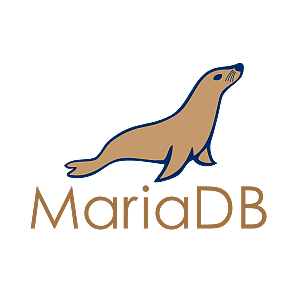
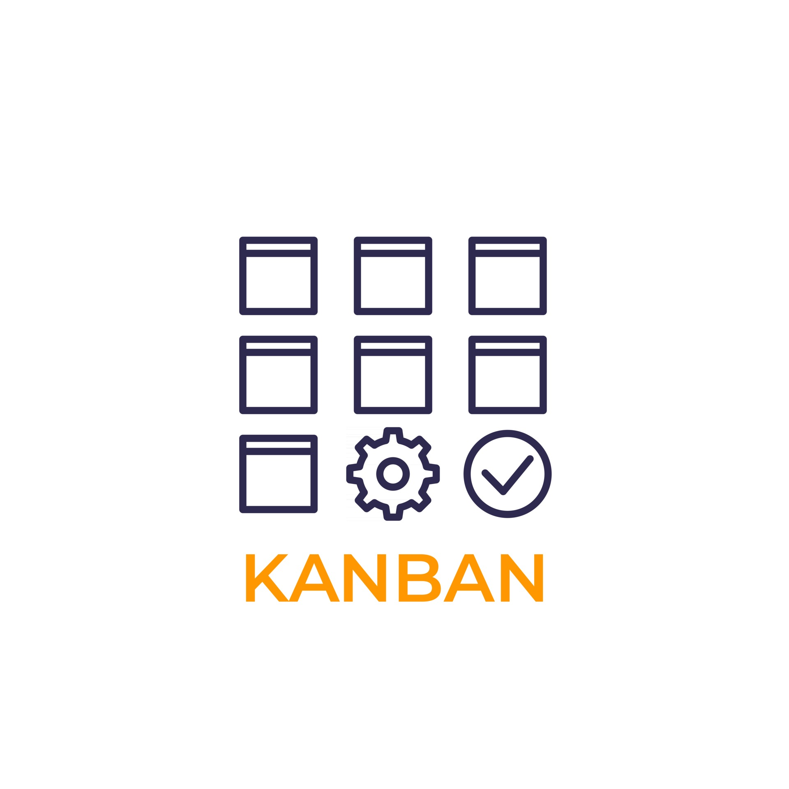

Projet de fin de formation qui a duré 1 mois, réalisé en Agile avec les méthodes SCRUM et kanban.
Nous étions 4 développeurs spécialisés Symfony, le tout fonctionne actuellement grâce à des fixtures (données fictives, afin de créer du contenu textuel).
Il s'agit d'un site web destiné à aider les personnes souhaitant trouver un nouvel environnement pour travailler en remote.
La sélection peut se faire par nom de ville, pays, critères (la météo, les besoins matériels ou physiques, les contraintes ou restrictions, etc).
L'authentification / inscription est fonctionnelle afin de permettre aux membres de gérer les villes favorites de poster des commentaires et de noter des villes.
Le backoffice permet de gérer facilement les contenus (villes, pays, images, utilisateurs, commentaires).
Je travaille sur une version parallèle de ce site en passant à PHP 8 et Symfony 6, afin d'implémenter des composants Symfony UX tels que Live Components et Autocomplete.
Etant fan de CSS avancé, je vais retirer Tailwind du front et effectuer une refonte complète du site avec CSS et JS.
Je vais également concrétiser notre idée de base : faire appel à une API pour obtenir des données réelles sur les villes, pays et critères.

Audrey Tesson
Développeuse Web Fullstack
Contacts
Bonjour, ravie de vous rencontrer !
Je suis une développeuse
- Backend PHP
- Spé Symfony
- Frontend
- Agile
Bienvenue dans mon univers captivant, aux possibiltés infinies !
En tant que développeur web junior, je suis une véritable passionnée du Frontend, du Backend et des nouvelles technologies. Je concrétise vos idées et concepts avec expertise et créativité. Plongez dans mon univers où l'innovation et l'esthétique se rencontrent pour offrir des expériences numériques uniques.
Portfolio
Trip O'dviser
Reprendre un projet déjà avancé, avec une intégration HTML/CSS.
Changer de mode (dark/light) puis de thème (rouge/vert/bleu).
Créer un slider fonctionnel, une modal newsletter contenant un filtre et messages d'erreurs en cas d'utilisation d'emails jetables.
Changer de mode (dark/light) puis de thème (rouge/vert/bleu).
Créer un slider fonctionnel, une modal newsletter contenant un filtre et messages d'erreurs en cas d'utilisation d'emails jetables.
JavaScript
Bootstrap
Game of Thrones
Créer les pages suivantes : accueil, un personnage, lister les maisons, lister les
personnages des maisons.
Le tout de façon dynamique (contenu, couleurs), en établissant les relations via une BDD et en utilisant Laravel et Blade.
Le tout de façon dynamique (contenu, couleurs), en établissant les relations via une BDD et en utilisant Laravel et Blade.
Laravel
Blade
PHP
phpMyAdmin
Pokédex
Créer un Pokédex en utilisant PHP, MySQL, HTML et CSS, Composer et AltoRouter.
Créer la page d'accueil qui liste tous les pokémon de la BDD et une page détail d'un pokemon,
comprenant ses stats et son type (couleur en fonction du type).
Enfin, une page qui liste les types, qui redirige vers une page qui liste les pokémon filtrés par le type cliqué précédement.
PHP
phpMyAdmin
MySQL
Les APIs du monde
Contacter une API REST avec JavaScript, traiter les données, filtrer pout n'aficher
que les noms et drapeaux.
Ajouter un moteur de recherche de pays.
Ajouter un moteur de recherche de pays.
JavaScript
API
AuxShoes
Un client veut créer un site de e-commerce: une boutique en ligne
de chaussures. Nom de code du
projet : AuxShoes. Le client est en fait un groupement de plusieurs marques de
chaussures qui ne
sont pas encore présentes sur internet. Et ces marques ne souhaitent pas
dépendre d'une autre
société pour la distribution.
PHP
MySQL
phpMyAdmin
Bootstrap
Compétences Techniques
Développeuse Frontend
 Tailwind
Tailwind
Développeuse Backend

MariaDB
 Twig
Twig
Divers
GitHub
API Rest
.png)
Méthode Agile

SCRUM

Kanban
Disclaimer
Vous pouvez survoler ma photo pour accéder aux informations de contact, les icones redirigent au click sur un nouvel onglet.
Pour le moment, mon portfolio contient uniquement les projets réalisés au cours de ma formation de
Développeur Web chez O'Clock, et est régulièrement mis à jour.
Pour des raisons de confidentialité et de droits d'auteurs, les noms de projets ne correspondent
pas,
certains contiennent une preview en vidéo, un résumé, ainsi que les techs utilisées. D'autres
possèdent
également un lien GitHub.